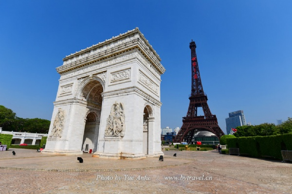
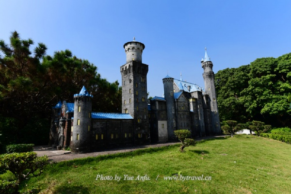
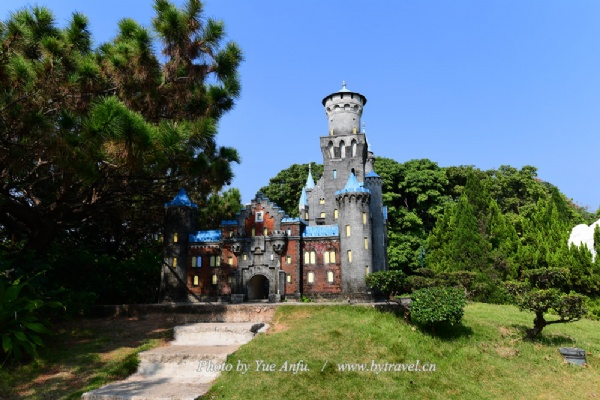
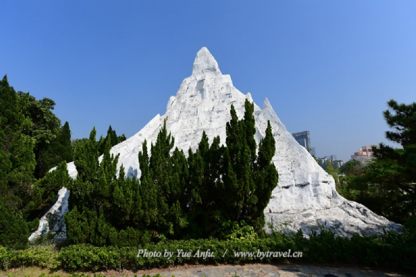

深圳世界之窗，位于深圳湾畔美丽的华侨城，占地48万平方米，是由中国旅游集团有限公司（占股51％），华侨城集团有限公司（占股49％）共同投资兴建的大型文化旅游景区，分为世界广场、亚洲区、大洋洲区、欧洲区、非洲区、美洲区、世界雕塑园和国际街八大区域，囊括世界著名景点微缩景观130多处、十数项娱乐参与项目、恢弘的大型广场艺术晚会、多彩的景点异国风情表演和缤纷的主题文化节庆活动，“为中外游客营造了一个美妙欢乐的世界”。
 深圳世界之窗善于创新，开创了以文化主题包装参与性娱乐项目的发展途径。穿越欧罗巴、飞跃美利坚、科罗拉多峡谷漂流、亚马逊丛林穿梭、金字塔探险、重返侏罗纪、印第安部落、阿尔卑斯冰雪世界等十余个娱乐项目的成功开发，使景区实现从纯观赏型到综合娱乐型的转变。2018年国庆前夕，景区再次推出全新XD动感影院——《极速富士山》。座椅动作最快可达400次每秒，最高模拟2G的失重感觉，影片和座椅动作同步度极佳，视觉和触觉匹配无限接近真实。游客可在极大程度上体验速度、失重、追逐等真实的感觉。
 